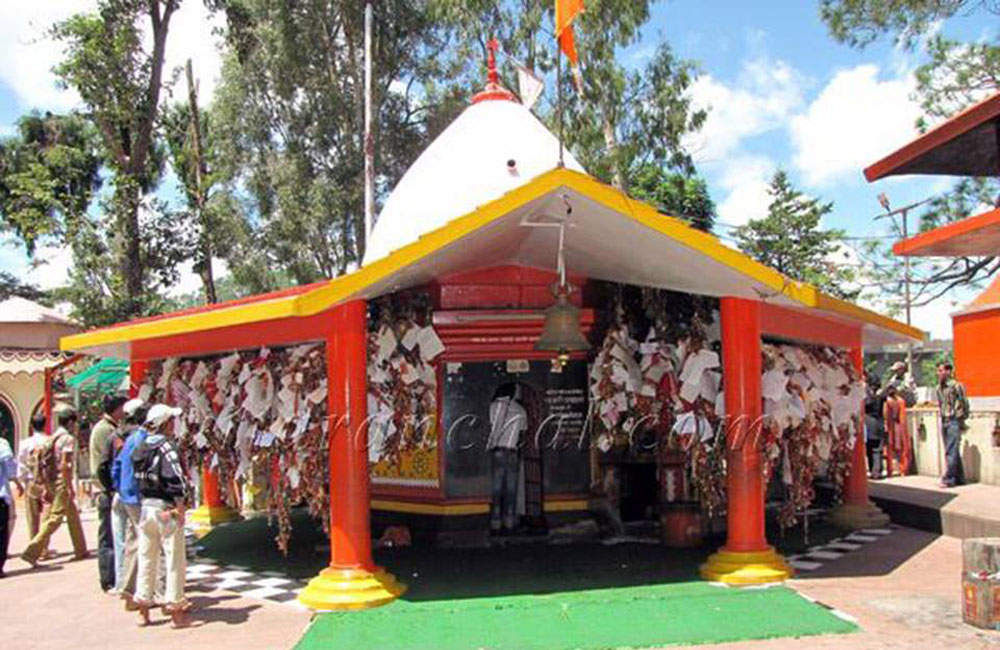
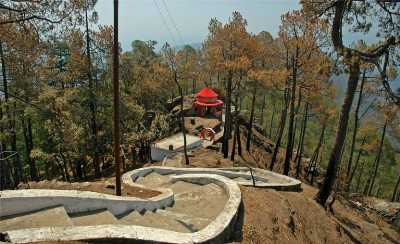
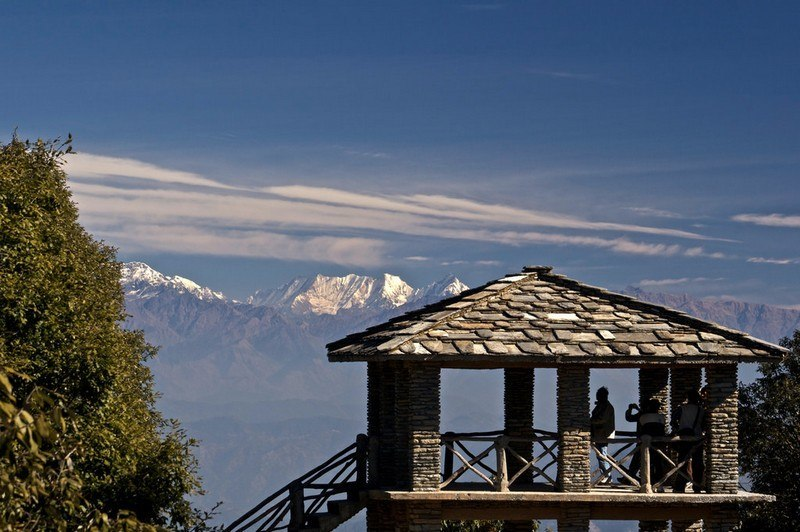
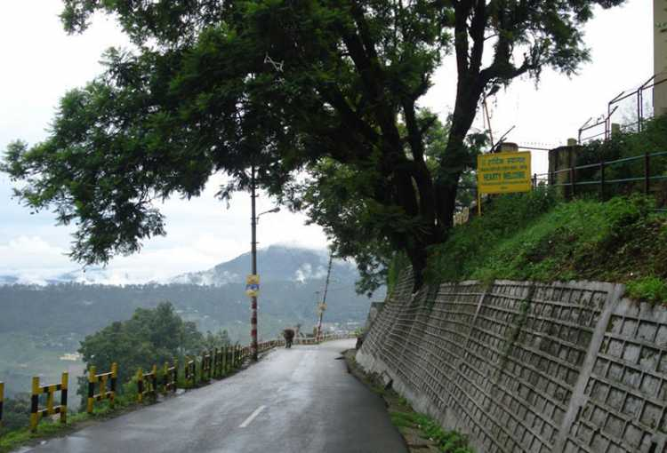
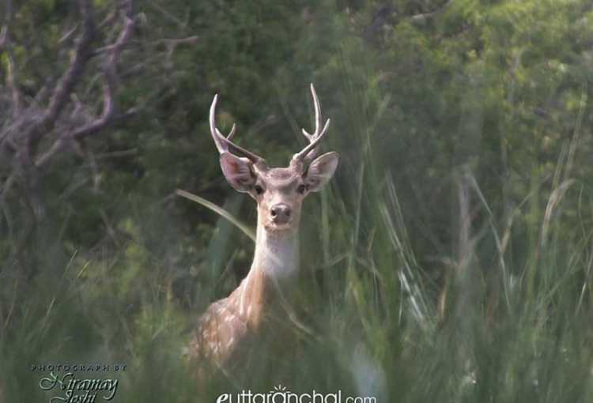
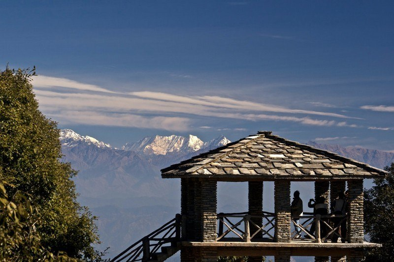
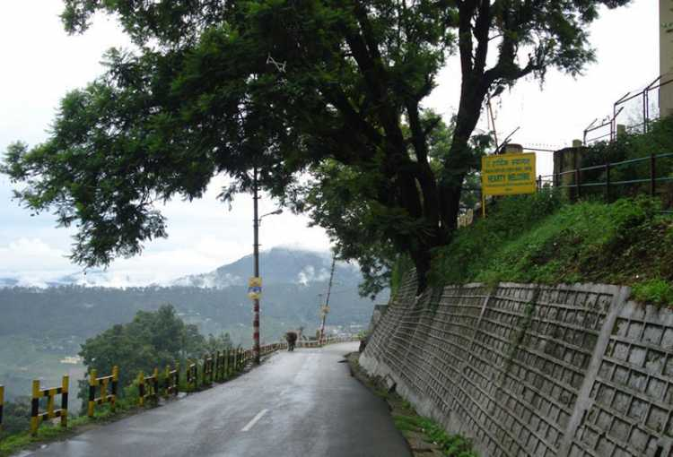
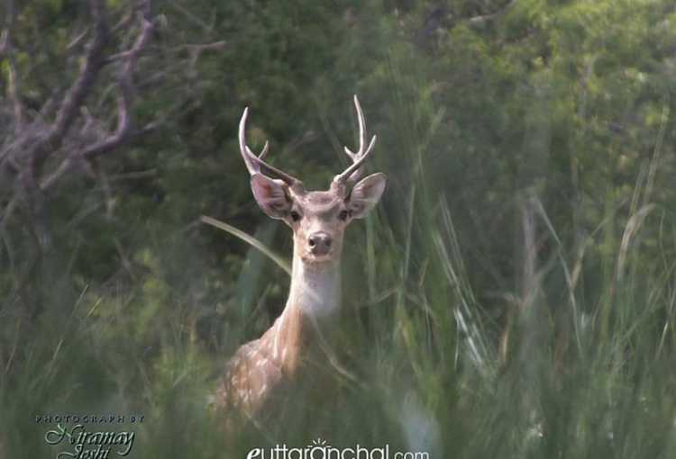

My Hometown- Almora
Almora - Cultural Capital of Kumaon
Known for its cultural diversity, Almora, this bewitching hill station is situated at an average elevation of 1,638 meters and is spread across a 5 km ridge atop Kashyap Hill. Being surrounded by the dwindling pines and old oaks, the city has a divine aura that is enough to allure the backpackers.
To make the scenery even more mesmerizing, the snow-capped Himalayas stand in utmost grandeur to please the visitant from Almora.
Places to see in Almora

Chitai

Kasar Devi
 Jageshwar

Binsar

Bright End

Deer Park
Jageshwar

Binsar

Bright End

Deer Park
Almora overview
- Temperature in June 15/9 C
- Best time to visit Almora Mar, April, May, Jun, Sep, Oct, Nov
- Located in Kumaon
- Nearest Railway station Kathgodam, 83 kms
- Nearest Airport Pantnagar 115 kms
- Famous for Hill Station, Town, Cultural Hub, Fairs and Festivals, Temples
Almora travel tips
- Almora does see its fair share of snowfall in winter. So, if you plan your visit between January and March, chances are you'll be greeted with snow at Almora.
- Almora is around 370 km from Delhi. This makes it a plasibel weekend getaway destination to spend some quality time with your famiy and friends amidst nature.
- Being at an elevation of 1638 meters, Almora gets quite chilly at nights. So, alays carry warm cotes with you when traveling to Almora
- As Almora is the busiest town and commercial hub, facilities like ATMs, petrol pumps, eateries are easily available